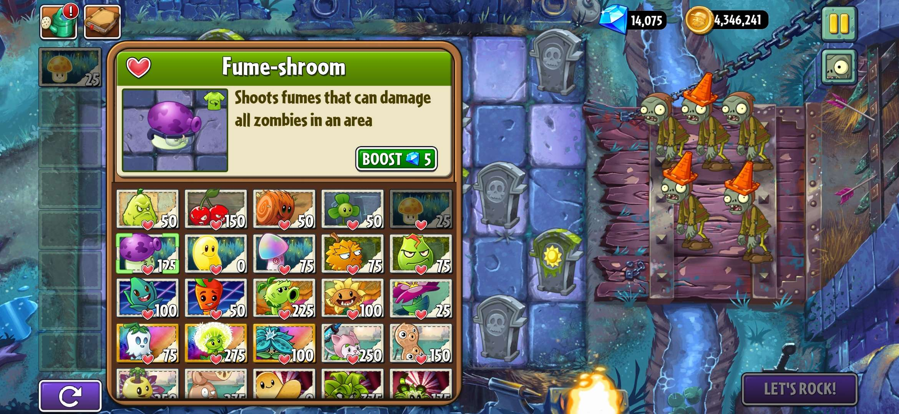
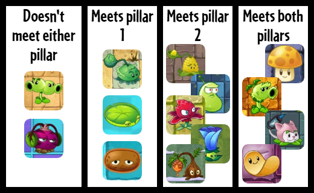
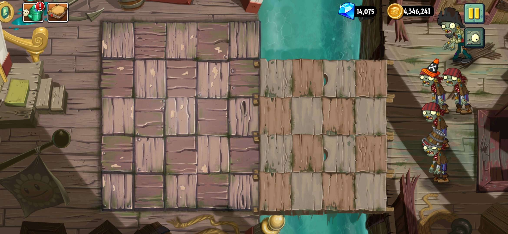
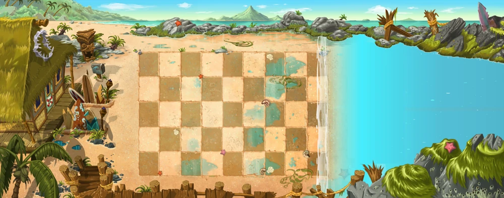
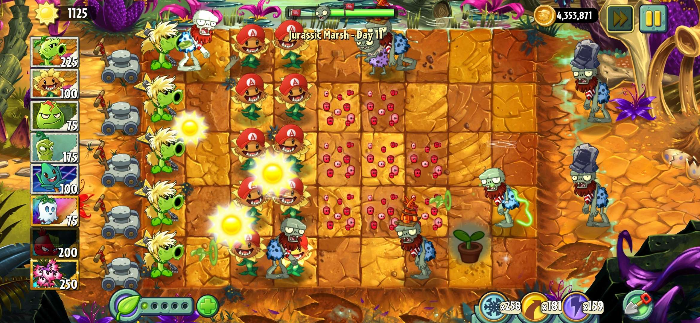

Plants vs. Zombies 2, like the name suggests, is a game about plants fighting zombies. Unsurprisingly, players unlock more plants as they play through the game, with the plants of each world generally being good matchups for the zombies of that world. In each world, players typically unlock a new plant after beating the first level, named “Day 1.” Since most worlds follow the pattern of unlocking a plant after beating Day 1, I’ve grouped these into a subset called “Day 1 Plants.” Day 1 Plants serve an important role in the game, but not all Day 1 Plants are created equal. As such, I wanted to look at what it means to be a Day 1 Plant, and how well the plants themselves live up to that role. I will be looking at Plants Vs. Zombies 2: Reflourished (aka RFL), as it is the mod I am most familiar with and because of its intentions to be faithful to the original Plants vs. Zombies 2 (aka “Vanilla”) while also providing new content in the style of vanilla. However, I will be talking about the vanilla worlds in the context of the original PvZ2 (mainly through the plant’s original stats), and the new RFL worlds in the context of Reflourished.
What makes a Day 1 Plant?
Day 1 Plants serve as one of the first impressions players see about the world. Since each world is designed differently, Day 1 Plants provide a new tool for players to use and figure out the best way to approach the new levels, zombies, and gimmicks. Because of this synergetic nature between the plant and the world, one of the core pillars of what a Day 1 Plant should be is that it should interact with the world’s gimmick in one way or another. Typically, this is accomplished by showcasing the world’s gimmick in Day 1, allowing the player to see the gimmick for the first time and pondering on how the gimmick will affect how they approach the world, and then giving the player the Day 1 Plant as an “answer” for the gimmick. Sometimes, Day 1 locks the Day 1 Plant in the player’s seed slot to use, but other times, the player will unlock it and naturally want to use the plant in upcoming levels.

Also because of the synergetic nature between the plant and the world, this leads into the 2nd core pillar of what a Day 1 Plant should be: the plant should remain a viable option as the player progresses through the world. If the Day 1 Plant is quickly outclassed by other options, then it is unable to perform its role and loses its uniqueness to the world’s gimmick. Having a bad Day 1 Plant also sours the player’s impression of the world’s gimmick, since the first “answer” they were given wasn’t a good option, as well as indirectly limiting options to deal with the world’s gimmick. Other plants in the world can (and sometimes should) also interact with the world’s gimmick, but those plants should not entirely replace the Day 1 Plant. Rather, they should serve as alternatives, bringing their own pros and cons to using them over the Day 1 Plant.
A Closer Look at Each Plant

Ancient Egypt:
World Gimmick: Graves
Day 1 Plant: Cabbage-pult
Verdict: Meets Pillar 1
Since Cabbage-Pult is unlocked after beating Ancient Egypt - Day 2 in RFL and older versions of VNL, I’m considering it the “Day 1 Plant” of Ancient Egypt. Cabbage-Pult is given to the player to deal with graves on the lawn. Straight-shooter plants (like Peashooter) will have their attack blocked by graves if there is a zombie in the lane, while Cabbage-Pult’s cabbages will avoid graves and attack the zombie directly. While Cabbage-Pult is good for interacting with graves for the first few levels, he falls off hard as you unlock other plants that can handle graves more effectively. Grave Buster is unlocked after beating Day 9, which can destroy graves directly. Other stronger plants can destroy graves quickly, making them a non-issue unless graves are spawned again, and the player unlocks stronger catapult plants in other worlds, stealing Cabbage’s unique interaction with graves and making him obsolete.
One of the main issues with Cabbage-Pult is that he’s a victim of circumstance. He interacts with graves well, but the issue is that graves in Ancient Egypt just aren’t an interesting gimmick. While straight-shooter plants do have their projectiles blocked by graves, plants can attack graves even if there are no zombies in the lane, meaning that those kinds of plants can destroy graves before they even become a problem. Grave Buster does provide trade-offs compared to Cabbage-Pult, but Grave Buster actually deals with the core issue of graves, while Cabbage-Pult just ignores them (like attacking a symptom of the problem instead of the root of the problem). Cabbage-Pult is meant to be a catapult version of Peashooter power-wise, but is actually worse than Peashooter due to his fire rate. Cabbage-Pult’s cabbages always take 2.85-3 seconds to hit a zombie, no matter where it is in the lane, while Peashooter's peas hit zombies much faster the closer they are to Peashooter. Considering all of this, Cabbage-pult had his 5 minutes of fame, but quickly becomes forgotten as the player progresses through the campaign.
Pirate Seas:
World Gimmick: Planks
Day 1 Plant: Kernel-pult
Verdict: Meets Pillar 2
While Kernel-pult is a low damage dealing catapult like Cabbage-Pult, his ability to lob stunning butter makes him substantially better. Due to Kernel-pult’s low cost and chance to throw butter that stuns zombies, he’s best used as an early game attacker or as a support plant to much stronger plants late game. He can immediately defeat certain zombies in his home world, Pirate Seas, like Seagull Zombies and Zombie Parrots. However, he doesn’t really interact with the world’s gimmick, Planks. Planks allow grounded zombies to normally walk onto the player’s lawn, while plankless lanes utilize flying or ambush zombies to enter the lawn (like Imp Cannons or Swashbucklers). A good Day 1 Plant for Pirate Seas would be a plant that either moves zombies into the water (essentially instantly killing non-flying zombies), or a plant that takes advantage of the fact that zombies are grouped together on planks. Unfortunately, Kernel-Pult does neither, so while he is a good plant on his own, he doesn’t completely fit the “Day 1 Plant” role for the world.

Wild West:
World Gimmick: Minecarts
Day 1 Plant: Split Pea
Verdict: Meets Neither Pillar
Split Pea deals Peashooter-level damage to zombies in front of it and Repeater-level damage to zombies behind it and is given to the player to counter Prospector Zombies. One of the core issues of Split Pea is that it is a situational plant; i.e., the player will only consider using Split Pea if there are zombies coming from the left side of the lawn. In vanilla, only Wild West and Jurassic Marsh create scenarios where zombies will come from behind. Combine this with the fact that Split Pea only does Peashooter-level damage to most of the zombies in the game, it means that Split Pea won’t see much use in the main campaign, failing to satisfy Pillar 2 of being a Day 1 Plant.
While Split Pea can utilize minecarts, it fails at showing off the usefulness and potential of how players can use them. Most of the minecart layouts in vanilla’s Wild West have minecarts on the left side of the lawn, making it difficult to utilize Split Pea’s backwards attack range. For the minecart layouts that have minecarts on the right side of the lawn, there are not many (if any) favorable positions to use Split Pea on a minecart over other options. Pea Pod is unlocked after beating Day 6 and does a better job at showing off how players can utilize minecarts. It is a plant that can be planted on the same tile up to 5 times to increase its overall damage. By investing in a Pea Pod on a minecart instead of a regular tile, players are able to utilize Pea Pod’s power in all lanes the minecart can travel to as opposed to the single lane it would’ve been restricted to. Pea Pod outclasses Split Pea in a role that Split Pea didn’t even do well in. Unfortunate.
Far Future:
World Gimmick: Power Tiles
Day 1 Plant: Laser Bean
Verdict: Meets Pillar 2
Laser Bean is a solid plant to use both in and out of Far Future. In Far Future, he can reliably attack zombies like Shield Zombie and clear out weaker zombies like Jetpack, Disco Jetpack, Bug Bot Imps, Basics and Coneheads. Outside of Far Future, he is a good option for fighting zombies like Excavator, Parasol, Jester, and other weaker zombies, but struggles against zombies with a lot of health.
Power Tiles allow plants who have been given Plant Food to trigger the plant food effects of other plants on corresponding Power Tiles without consuming additional Plant Food. When fed with Plant Food, Laser Bean jumps and fires a powerful laser blast from his mouth, dealing 1800 damage to all zombies in front of him in the lane. While this is a solid plant food effect on its own, it doesn’t directly incentivise the player to use Laser Bean on Power Tiles. The player is taught about Power Tiles in a dedicated tutorial using Peashooter and Repeater, so Laser Bean’s job of inspiring players to experiment with Power Tiles is accomplished through this tutorial instead. Power Tiles in Far Future aren’t a very impactful gimmick, as it is purely beneficial to the player, the player can choose not to use plant food in general, and no zombies have any direct interactions with Power Tiles. Due to this lack of impact and the fact that all plants can interact with Power Tiles, Laser Bean’s role of a Day 1 Plant to show off the new gimmick just isn’t needed, and reflects more on how little Power Tiles contribute to Far Future’s design than Laser Bean being bad as a Day 1 Plant.
Dark Ages:
World Gimmick: No Sun Falls from the Sky + Graves
Day 1 Plant: Sun-shroom
Verdict: Meets Both Pillars
Sun-shroom is one of the best sun producers in vanilla. Since it is the cheapest of the sun producers, the player can plant more Sun-shrooms at the start of the level compared to other sun producers. Since the player won’t get sun from the sky, having more Sun-shrooms on the lawn leads to a higher ramp of sun production throughout the level. Sun-shroom pays back its cost of 25 sun almost immediately, then turns a profit after growing to stage 2. Due to Sun-shroom’s cheap cost and fast recharge, it’s easy to spam them anywhere on the lawn and disregard their safety, as each one will yield a fast (albeit small) profit before being eaten by zombies. Sun-shroom was such a good plant in vanilla that Reflourished actually nerfed its health to 100 HP to help offset its spammability.
Since Sun-shroom is pre-picked for the player in Dark Ages’ Night 1, the player gets to see firsthand how strong Sun-shroom is as a sun producer, especially in an environment where they can’t rely on the secondary sun source to help afford sun producers early on in the level. While Sun-shroom doesn’t do anything against graves, another gimmick in Dark Ages, it can help the player afford plants that can deal with them. The graves in Dark Ages act very similar to the graves in Ancient Egypt; however, graves with a sun symbol on them will reward the player with 100 sun after destruction, and graves with a leaf will reward the player with a plant food. These graves, as well as the regular graves, are what the “Necromancy!” ambushes rely on (which spawn zombies from graves), so the more graves the player has destroyed, the less dangerous the ambush will be.
Big Wave Beach:
World Gimmick: Tide
Day 1 Plant: Lily Pad
Verdict: Meets Pillar 1
The tide can cover a different portion of the lawn each level, allowing flying or “aquatic” plants to be planted directly on the water. Plants that are not flying or aquatic must be planted on a Lily Pad. Lily Pads expand the possible strategies players can use in the world, as they allow the use of non-flying or non-aquatic plants in players’ setups. Lily Pad is also pre-picked for the player on Big Wave Beach - Day 1 to show them how Lily Pad can contribute to players’ strategies.
However, Lily Pad’s viability outside of this world is virtually nonexistent. Lily Pad is considered a “tool plant”, a plant that exists to counter a specific scenario and nothing more. While Lily Pad technically expands what strategies the player can use in Big Wave Beach, the reason it does that is because it solves an issue only this world creates. Lily Pad is a plant players have to bring into the world if they want to continue using the strategies they’ve used in previous worlds, and it serves as a 25 sun tax for normal plants being planted on the water. No other world in the main adventure uses water, so players have no reason to use Lily Pad elsewhere besides being a slot filler, and vanilla actually locked Lily Pad to Big Wave Beach up until update 11.2.1. While Lily Pad is a plant that is strongly connected to its world’s gimmick (the strongest connection thus far), it fills that role to a detriment.

Frostbite Caves:
World Gimmick: Freezing Winds + Slider Tiles
Day 1 Plant: Hot Potato
Verdict: Meets Pillar 1
Hot Potato shares a lot of the criticisms as Lily Pad when it comes to its role as a Day 1 Plant. While Hot Potato can melt frozen plants and zombies, she gets overwhelmed easily when multiple plants are frozen in a short time due to her 10 second recharge. The only other warming options players have are plants that exude heat. However, these heating plants must be next to a frozen plant in order to thaw it, and the thawing process is over a lengthy period of time, compared to Hot Potato instantly melting the plant she is planted on. To make matters worse, if the player is playing the worlds in order, their only heating options are Hot Potato and Pepper-pult, since Snapdragon’s heating ability was added long after adventure mode was completed (Update 9.1.1, while Modern Day part 2 was added in update 4.5.2), and the other heating plants are premiums (which cost real money).
Since Hot Potato is also considered a tool plant, her viability outside Frostbite Caves is also nonexistent. Vanilla tried giving Hot Potato more utility by allowing her to melt octopi thrown by Octo Zombies and allowed her to be used in all other worlds after the adventure mode was completed, but outside of scenarios involving freezing winds or octopi, Hot Potato serves no purpose.
Lost City:
World Gimmick: Gold Tiles
Day 1 Plant: Red Stinger
Verdict: Meets Pillar 2
Red Stinger acts as a sidegrade to Repeater. When planted in columns 1-3, he will fire 2 petals that deal 30 damage each every 2 seconds (which is a higher damage per second (DPS) than Repeater). When planted in columns 4-6, he will only fire 1 petal that deals 15 damage every 2 seconds, but his health will increase from 300 to 900 HP. When planted in columns 7-9, he will be unable to attack but his health will increase from 900 HP to 1500 HP. Red Stinger is meant to act as a “jack of all trades”, but he is most powerful in his 1st form. He is great at dealing with groups of low-health zombies, which make up a lot of the Lost City cast.
Gold Tiles are tiles on the lawn that provide players with 50 sun when initially planted on, and will generate 50 sun for every 20 consecutive seconds it is planted on. However, due to his cheap cost and fast recharge, Red Stinger doesn’t incentivise the player to use gold tiles to their fullest. The player will already be using sun producers as usual, and Red Stinger’s cost is a cost the player can usually afford without the help of gold tiles. In my opinion, the Day 1 Plant for Lost City should’ve been an expensive plant, encouraging players to use normal sun producers and gold tiles to be able to reliably afford them. As is, the player’s overall sun production will be increased due to gold tiles, and the world “counters” that by increasing the zombie density and adding more dangerous threats instead of incentivising the use of expensive plants to offset the increased sun production.
Neon Mixtape Tour:
World Gimmick: Jams
Day 1 Plant: Phat Beet
Verdict: Meets Neither Pillar
Phat Beet’s main issue as a plant is how little damage it deals. It deals 15 damage in a 3x3 area around itself every 1.7 seconds. From anywhere between its fourth and sixth attack, Phat Beet will send a critical hit, dealing 45 damage. Since melee plants have a short window of time where they can attack zombies, their DPS needs to be relatively high to make them worth using compared to their contemporaries. Bonk Choy, the first melee plant the player receives, has a DPS of ~45, and Snapdragon, another melee plant with similar range to Phat Beet, has a DPS of ~16, while Phat Beet has a DPS of ~8. When the player unlocks Phat Beet, it is the worst performing melee plant the player can use, making its viability both in and outside of Neon Mixtape Tour worthless.
The other issue with Phat Beet is that almost every zombie in its home world counters it. Since Phat Beet is a melee plant, it needs zombies to be right in front of it to be potent. The issue with that is that the Neon Mixtape Tour cast are most powerful when they are right in front of plants. Jams allow special zombies to have specific interactions with plants when their respective jam is playing, and also change the speed of all other zombies on the lawn (with 2 of the jams increasing zombies’ speed). Punk can kick plants when he gets too close, allowing him to move Phat Beet before it could kill him. Glitter instantly crushes any plant she gets near instead of eating them. MC Zom-B spins his microphone in a 3x3 area, allowing him to kill Phat Beet before he’s even in Phat Beet’s range. Arcade pushes an arcade cabinet that crushes Phat Beet, and Heavy Metal Gargantuar can send shockwaves that kill Phat Beet from afar. The only zombie that doesn’t instantly shut down Phat Beet is Boombox, as Phat Beet is immune to Boombox’s stunning ballad. I wish Phat Beet had more niche interactions with some of the other NMT cast like it does with Boombox, but that one interaction is not enough to save it from failing at its role of being a Day 1 Plant and as a plant in general.
Jurassic Marsh:
World Gimmick: Dinosaurs
Day 1 Plant: Primal Peashooter
Verdict: Meets Both Pillars
Primal Peashooter is a great single-target plant in vanilla primarily due to his knockback. Each pea Primal Peashooter shoots has a 50% chance to knock a zombie back, allowing the zombie to be kept at bay until it dies. Primal Peashooter is highly viable against zombies like Gargantuars and tanky zombies, as he can keep them back until they die, or group them with other zombies to make instant plants more potent. However, he struggles against groups of low health zombies due to his slow fire rate of 2.85-3 seconds, but he can hold his own much longer than other single target plants.
Primal Peashooter is great against the world’s gimmick, Dinosaurs. Most of the dinosaurs in the world push zombies forward, while Primal Peashooter can knock them right back. He struggles most against Pterodactyls, as zombies carried by them to the first column can eat him before being knocked back. Regardless, Primal Peashooter is generally a good pick against dinos, and Raptor being introduced in Day 2 (after the player unlocks Primal Peashooter) shows the player the back-and-forth dynamic of Jurassic Marsh.

Modern Day:
World Gimmick: Portals
Day 1 Plant: Moonflower
Verdict: Meets Pillar 2
Moonflower can be a powerful sun producer after being properly set up. At her max, she can produce 100 sun every 32-36 seconds. However, she needs 3 other shadow plants to be in the 3x3 area around her to be powered up. On her own, she only produces 25 sun every 32-36 seconds, gaining an additional 25 sun for every shadow plant around her. Luckily, additional Moonflowers also increase her total, so a group of 4 Moonflowers can each produce 100 sun. Using other shadow plants with Moonflower is critical, since Moonflower is one of only 4 plants that power other shadow plants, with 2 of the other 3 plants only providing temporary shadow boosts.
Moonflower (and to an extent the rest of the shadow plants in the world) don’t really interact with Modern Day's gimmick of portals. Portals can spawn any zombie from any preceding world anywhere in the lawn. When playing a level for the first time, players won’t know what zombies will appear from portals nor where they will spawn, so they constantly have to be on guard and ready for anything, leading them to bring their most powerful plants. One of the most powerful plants in vanilla is powered Dusk Lobber, but the player won’t unlock that plant until after Day 17, halfway into the world. The shadow plants as a whole feel very tacked on to Modern Day and don’t synergize well with the world, so while Moonflower works well with the plants the player unlocks in Modern Day, she doesn’t quite fit against the zombies and gimmicks of Modern Day.
Holiday Mashup:
World Gimmick: Presents + Holiday Drinks + Holiday Spirits
Day 1 Plant: Sap-fling
Verdict: Meets Pillar 2
Sap-fling was a premium plant in vanilla, but is unlocked in Holiday Mashup in RFL. Sap-fling is one of the best stallers in RFL, as he creates puddles of sap that slow down zombies substantially. Since he creates sap to slow zombies down (instead of chilling zombies), he can be paired with fire plants that would otherwise nullify chilling effects. With a firing rate that allows him to have multiple puddles active at a time, as well as his cheap cost (75 sun) and fast recharge (5 seconds), Sap-fling is one of the most effective dedicated stallers the player can bring into a level. RFL also increased his HP from 300 to 900 so that Sap-fling can act as a makeshift wall early on in levels or to be planted near the middle of the lawn throughout the level, saving the back of the lawn for heavy attackers while protecting them.
Since Holiday Mashup’s overall design and execution is different from other worlds, I wanted to discuss the world’s gimmicks before talking about Sap-fling’s place in the world. The first gimmick Holiday Mashup has are Presents. Presents act similarly to graves in Dark Ages, providing the player sun, plant food, or a free plant upon destruction. Presents have the same health as graves, but spawn at much more frequent intervals in Holiday Mashup levels. The second gimmick Holiday Mashup has are Holiday Spirits. As the name implies, Holiday Mashup is a mashup of all of the holiday content of vanilla (plus additional holiday reskins RFL made). Each specific holiday’s zombies have a quirk unique to them. For example, zombies from the Feastivus holiday are 75% resistant to chill effects, while zombies from the Springening holiday are completely immune to sap effects. The last gimmick Holiday Mashup has are Holiday Drinks. These are similar to Dark Ages’ Brain Buster, Potions, and provide zombies with differing levels of health or speed increase effects. Holiday Drinks also take up a tile on the lawn, cannot be planted on, and only disappear when used or crushed by zombies.
Now that I’ve talked about Holiday Mashup’s gimmicks, Sap-fling as Holiday Mashup’s Day 1 Plant is a baffling pick. First, Sap-fling doesn’t interact with presents. Since Sap-fling is a lobbing plant (and also deals no damage), he outright ignores presents, which can be deadly when presents sporadically spawn throughout a level, taking away space from the player until they are destroyed. Second, Sap-fling’s interaction with Holiday Spirits is very weak. While Sap-fling is a good option for stalling zombies resistant to other effects, he is completely useless against the Springening zombies, since they are completely immune to sap. For the zombies that are resistant to other stall effects, they are only resistant to one effect at a time. For example, while Feastivus zombies are resistant to chill effects, they are still fully vulnerable to effects like sap, stun, stallia, and freeze, meaning Sap-fling still has to compete with plants that can inflict those effects. Third, Sap-fling does work well against Holiday Drinks, but this synergy isn’t shown off when you first unlock Sap-fling. In fact, Holiday Drinks aren’t introduced until Day 7, and the drinks in that level are health-buffing drinks instead of speed-buffing drinks, not demonstrating Sap-fling’s real stalling potential in Holiday Mashup. Sap-fling should have been given to the player closer to when Holiday Drinks were introduced, and the first drink introduced should’ve been a speed drink to show off both how helpful speed drinks are to the HM cast as well as Sap-fling’s use in Holiday Mashup. As is, Sap-fling feels like an alright plant in the world, but is baffling as to why the player unlocks it first when it doesn’t really interact with any of the elements of Holiday Mashup that the player would be dealing with at that point.
Steam Ages:
World Gimmick: Sewers
Day 1 Plant: Cattail
Verdict: Meets Both Pillars
Cattail is able to damage zombies in front of her and behind her with homing spikes like in Plants vs. Zombies 1. However, she can only attack zombies that are 3 columns in front or behind her. To make up for her limited range, she fires 2 spikes every 1.4-1.6 seconds that each deal 25 damage, leading to a DPS of ~31.5-36. Due to this focused single target damage and small range, she is a great plant for the early game, being able to shred zombies’ health that step in her range while building up sun. When multiple Cattails are present, this single-target damage is focused even more to quickly take out zombies with high health that step into their range.
Cattail is great in Steam Ages, as Steam Ages’ main gimmick is backward zombies appearing from Sewers. Cattail is great at attacking zombies that appear from them while the player’s other attackers can focus on the normal-spawning zombies. Cattail provides a solid option for the player to use while the player brainstorms other plants that they can use throughout the world.
Caliginous Carnival:
World Gimmick: Tarot Cards
Day 1 Plant: Potato Chip
Verdict: Meets Both Pillars
Potato Chip is a great early game instant plant, rivaling plants like Puff-Shroom or Imp Pear. Costing 0 sun is great, especially in night world scenarios, as using Potato Chip doesn’t take away from building sun production. 3 Potato Chips can take out a Basic or Imp, although just 2 is enough to finish them off with practically any other source of damage since they’re left at 5 HP. Throughout the level, Potato Chip turns into a body-blocking plant that deals chip damage to large groups and briefly stuns them. It can weed out weaker zombies and soften tougher targets for the player’s main attackers to take down, as well as effectively stall zombies with longer attack animations like Gargantuars.
Potato Chip is an excellent plant to receive as the Day 1 Plant of Caliginous Carnival as it is a cheap and accessible way for the player to interact with Tarot Cards. At the beginning of levels, players can plant a Potato Chip on a card to see if the card will be beneficial or harmful for them without spending any sun to do so. Potato Chip can also be used on Tarot Cards on the right side of the lawn, as players wouldn’t typically plant permanent plants there (excluding ground plants).
Conclusion
While not every plant looked at meets both pillars of being a Day 1 Plant, I don’t think that’s necessarily a bad thing. For plants that do meet both pillars, I consider them really excellent plants because they are good options for playing throughout the game as well as acting as invisible tutorials for each new world. If a plant can’t meet both pillars, I would rather have a plant that is fundamentally good throughout the game than a plant that is hyperspecifically tied to its home world since an overall good plant can still see a lot of use in different strategies.
I am also cautiously optimistic about RFL’s newest world, Roman Gardens, and its Day 1 Plant, Turkey-Pult. Since Turkey-pult is currently a premium plant that already exists in RFL, I’m interested in seeing how the team conforms Turkey-Pult to fit the overall design of Roman Gardens, since this would be the 2nd time a pre-existing plant is used as a world’s Day 1 Plant instead of a brand new plant.